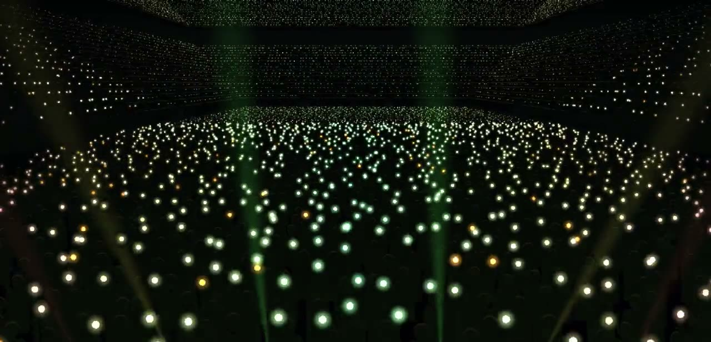
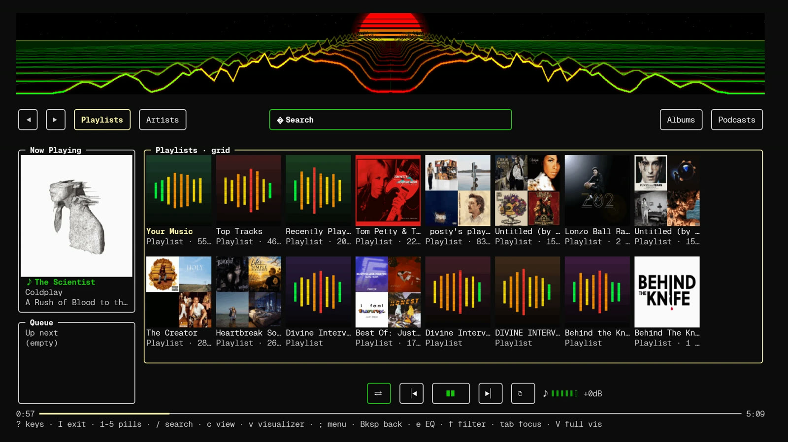

cliamp fork
cliamp is bjarneo's Winamp-style music player for the terminal. This fork adds pixel visualizers and an immersive browse mode.
cliamp is bjarneo's project, MIT licensed. This fork is maintained separately by jarmen423 and is not affiliated with upstream.
an arena of phone lights,
captured in the terminal
Real pixels in a terminal
Six visualizers draw actual images over kitty graphics or Sixel, in immersive mode and in the full-screen visualizer. Terminals without graphics support get half-block text instead. Every clip on this page is a capture of cliamp playing music.
immersive = true in config.toml. The visualizer runs in the band across the top.images = "sixel".A Spotify UI with real album art
Immersive mode turns your Spotify library into a browsable grid: playlist and album covers, a Now Playing card with the cover of the current track, a queue, and a visualizer across the top. In Windows Terminal, all of it runs in about 80 MB of RAM.

Streaming Spotify at 320 kbps with album art on screen and the Encore visualizer running in the immersive view, in v3.1.6.
Working set in Windows Terminal, as Task Manager shows it: 80.6 MB median, 83 MB peak. The same session on Linux uses about 86 MB (RSS). The full-screen visualizer uses about 89 MB on Windows and 102 MB on Linux. In the immersive view, v3.1.5 used about 92 MB on Windows and 99 MB on Linux. Measurements and method in #32.
- Your library. Playlists, artists, albums and podcasts as pills, with search. Browse adds genres, moods and new releases.
- Spotify Connect. cliamp shows up under "Connect to a device" in the Spotify apps, so your phone can pick the music. A song played on its own keeps going with its Spotify station, like Autoplay. Setup.
- Radio and smart shuffle. Song, artist and album radio, smart shuffle, artist pages, and playlist editing, from the keyboard or the mouse.
Needs a Spotify Premium account. Press I to open immersive mode.
On top of upstream cliamp
The fork tracks bjarneo/cliamp and keeps everything it does. These are the additions.
A browse layout like the Spotify apps
Visualizer band, nav pills, a Now Playing and Queue column, and a list, rows or grid canvas with cover art. b cycles the canvas view. A prototype, opened with I.
Cover art as real images
Album and playlist art over kitty graphics or Sixel, with a colored half-block fallback everywhere else.
Browse and Connect
A Browse page for genres, moods and new releases; library browser and artist pages; smart shuffle; playlist editing; and Spotify Connect receiver mode, so the Spotify apps can play through cliamp.
Song, artist and album radio
Radio seeded from Spotify stations opens as a playlist without starting playback. When Spotify has no station for a track, cliamp says so.
Picks up where you left off
Reopen cliamp to get the last track, position, queue and immersive page back, for every provider.
One static cliamp.exe
Spotify included, credentials stored with DPAPI, sign-in over a free local port, and Sixel graphics in Windows Terminal.
From upstream: local files, streams, podcasts, YouTube, YouTube Music, SoundCloud, Mixcloud, Bilibili, Spotify, Qobuz, Tidal, NetEase Cloud Music, Yandex Music, Xiaoyuzhou, Navidrome, Lyrion, Plex, Jellyfin, Emby and Audiobookshelf; about 58,000 radio stations; 39 visualizers; a 10-band EQ with 16 presets; 22 built-in color schemes; synced lyrics; Lua plugins with 12 events to hook; and remote control from scripts and media keys.
Get the fork
The script downloads the latest fork release, checks it against checksums.txt, and installs to ~/.local/bin. Set INSTALL_DIR to pick another directory.
Then run cliamp, or cliamp setup to connect streaming services and media servers. Optional: ffmpeg for AAC, ALAC, Opus and WMA; yt-dlp for YouTube, SoundCloud and friends. On macOS, release binaries need brew install flac libvorbis libogg mpg123.
cliamp upgrade still downloads upstream's release and would replace the fork. Run the install script again instead. Homebrew, the AUR package and cliamp.stream/install.sh also install upstream.| Platform | Release file |
|---|---|
| Linux x86-64 | cliamp-linux-amd64 |
| Linux ARM64 | cliamp-linux-arm64 |
| macOS Apple silicon | cliamp-darwin-arm64 |
| macOS Intel | cliamp-darwin-amd64 |
| Windows x86-64 | cliamp-windows-amd64.exe |
Download from GitHub Releases, make it executable, and put it on your PATH.
Music without the TUI
cliamp --daemon runs the same player with no interface. It loads your Lua plugins, sends scrobbles, keeps playback gapless, and takes commands from any terminal, script, status bar or hotkey. Stop it with Ctrl+C or SIGTERM; it saves the resume position first.
Start it
$ cliamp --daemon # no TUI, IPC only $ cliamp -d --auto-play --playlist Lofi # start playing on launch $ cliamp --daemon ~/Music --auto-play # play a directory
Control it
$ cliamp toggle # play / pause $ cliamp next $ cliamp volume -3 # set the volume to -3 dB $ cliamp load "Lofi" # load a playlist $ cliamp status --json # for status bars
Run it at login
A systemd user unit at ~/.config/systemd/user/cliamp.service, then systemctl --user enable --now cliamp.service.
[Service] ExecStart=%h/.local/bin/cliamp --daemon --auto-play --playlist "Lofi" Restart=on-failure [Install] WantedBy=default.target
Status bars and keys
Poll cliamp status --json from Waybar or Polybar, and bind media keys to the commands. MPRIS (Linux), Now Playing (macOS) and media-key hotkeys (Windows) work in headless mode too.
# Hyprland
bind = , XF86AudioPlay, exec, cliamp toggle
bind = , XF86AudioNext, exec, cliamp next
Only one cliamp runs per user: a second daemon exits with cliamp is already running. Theme and visualizer commands need the TUI. Full guide: docs/headless.md.